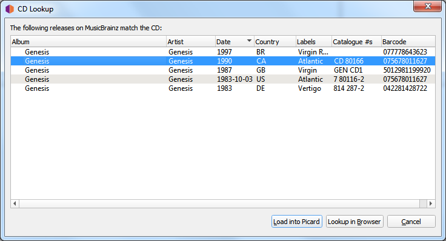
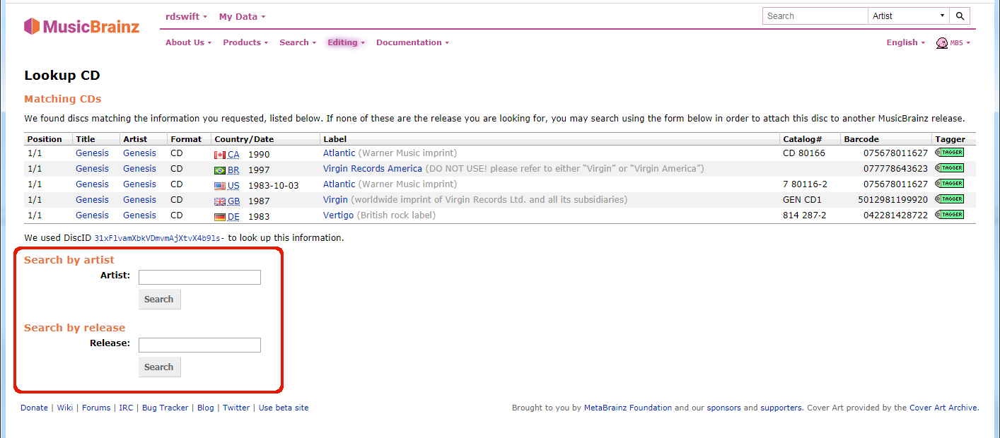
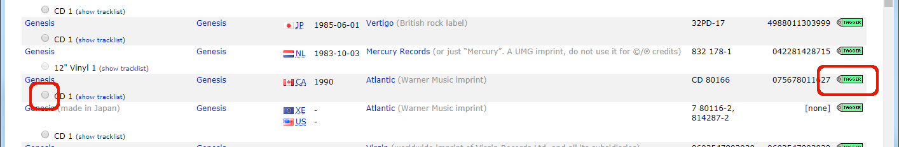
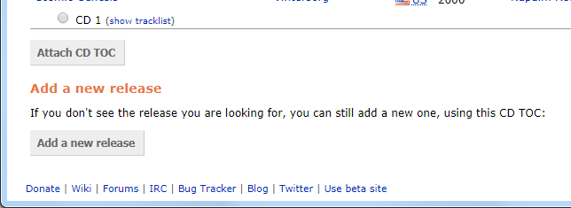

CD de recherche¶
Les étapes à suivre pour rechercher un CD sont:
Assurez-vous que le CD est inséré dans le lecteur et sélectionnez . Le toc du CD sera calculé et envoyé à MusicBrainz, et une liste des versions correspondantes sera affichée.
Sélectionnez la version correcte dans la liste. Cela chargera les informations pour la publication dans Picard.
Un symbole de musique devant un numéro de piste dans le volet de droite indique qu’aucun fichier n’a été attribué à la piste.

S’il n’y a pas de correspondance ou si aucune des correspondances n’est correcte, utilisez l’option pour localiser la version correcte. Saisissez le titre de la sortie ou l’artiste et lancez la recherche. Vous recevrez une liste des versions qui correspondent à votre critère de recherche et qui ont le même nombre de pistes que votre CD toc.

{kind=link}
{kind=link}
Utilisez la flèche verte
 pour charger les informations pour une publication dans Picard. De plus, vous pouvez sélectionner la version et attacher la toc.
pour charger les informations pour une publication dans Picard. De plus, vous pouvez sélectionner la version et attacher la toc.Si aucune des versions affichées n’est correcte, vous avez la possibilité d’ajouter une nouvelle version (avec certaines informations automatiquement incluses).

{kind=link}
{kind=link}